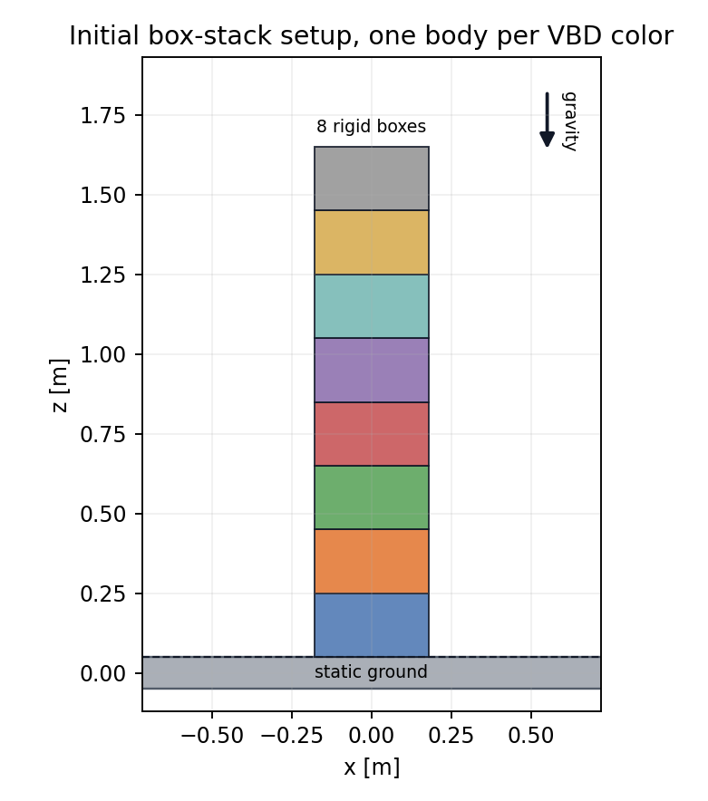
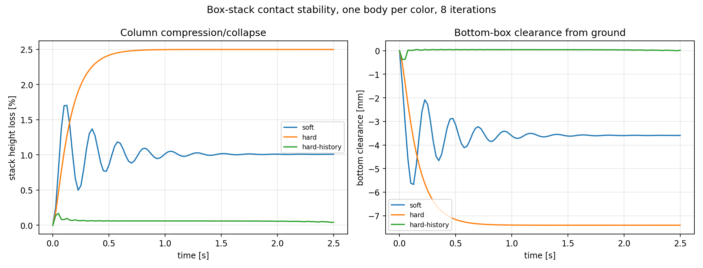
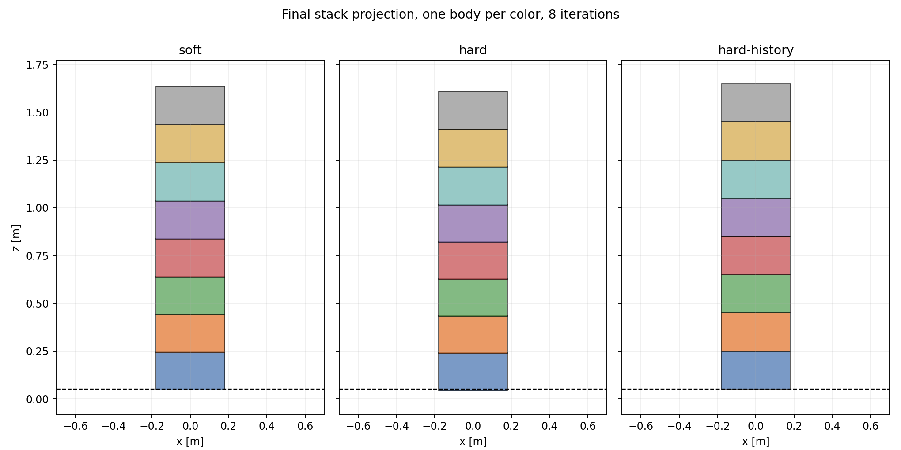
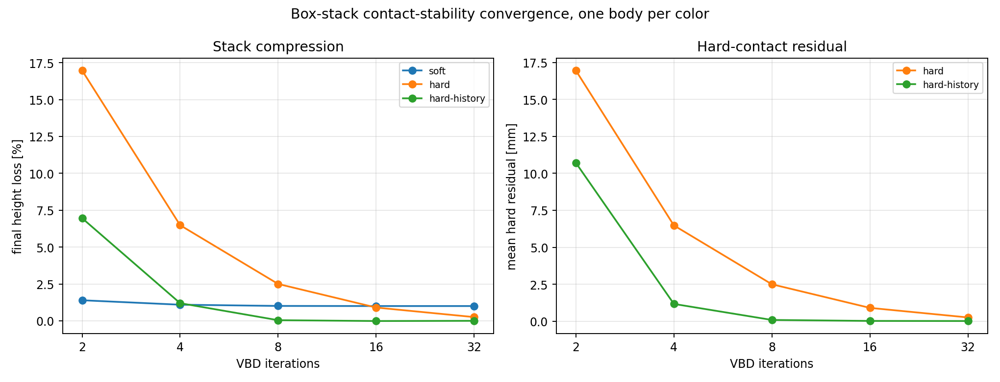
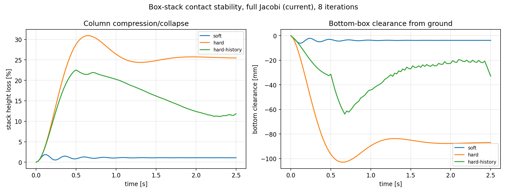
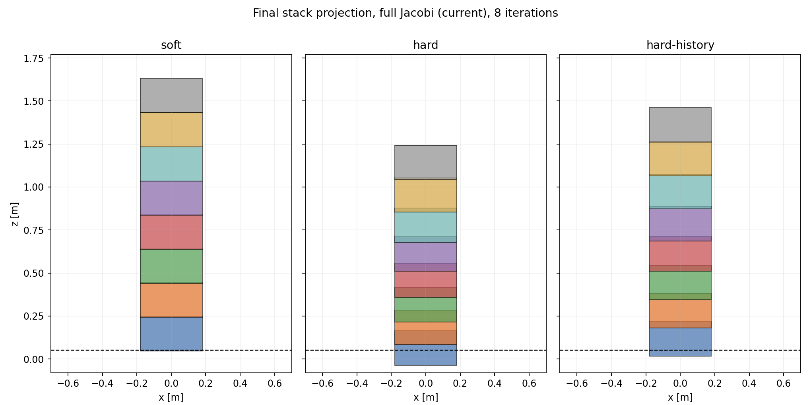
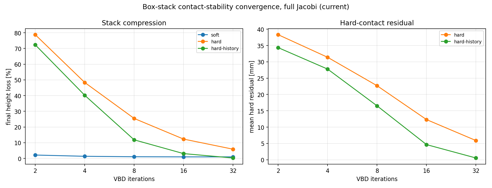
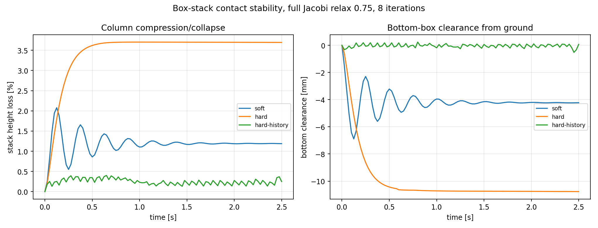
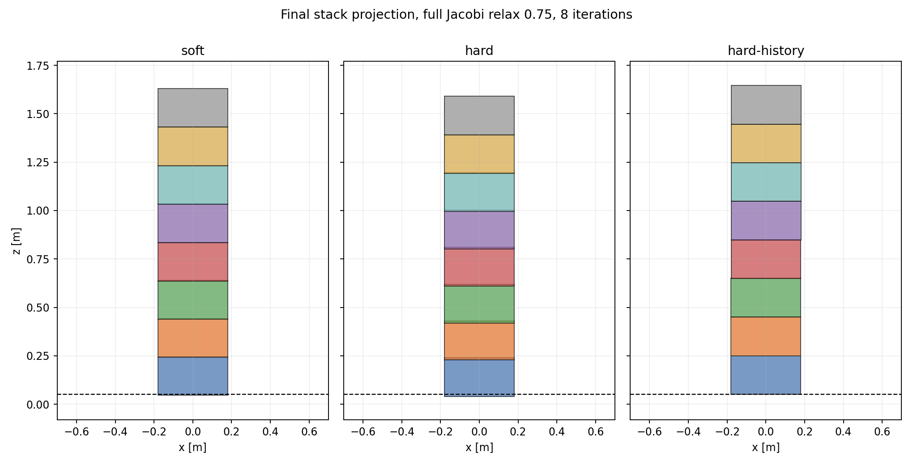
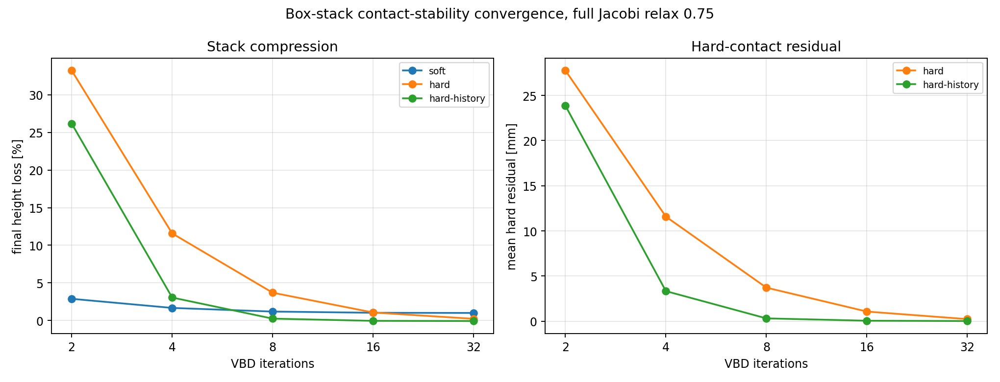

Setup
The stack starts as a vertical column of rigid boxes resting on a static
ground box under gravity. Each variant runs the same geometry and contact
modes: soft, hard, and hard-history.
The primary readouts are final stack height loss and same-mode post-solve normal contact residual. Lower values mean less stack compression and better normal-contact satisfaction.

Direct Schedule Comparison
These videos run the three solver schedules at 8 VBD
iterations. The first uses hard-history contact; the second
disables contact history; the third uses soft contact. Together they
separate schedule propagation, history warm-starting, and compliance.
History On: hard-history
History Off: hard
Soft Contact
Summary
0.0416%
and mean normal residual is 0.0814 mm.
11.8% stack height at 8 iterations.
0.75 reduces hard-history height loss to
0.249% at the same iteration count.
Full GS
Each dynamic body is placed in its own VBD color group. Corrections propagate directly through the vertical stack within an iteration.



Full Jacobi (Current)
This is the current no-joint rigid-body coloring path for the stack: all dynamic boxes are solved in one VBD color batch.



Full Jacobi Relax 0.75
Contact contributions are accumulated from a frozen iteration-start
pose, then body updates are under-relaxed by 0.75.


